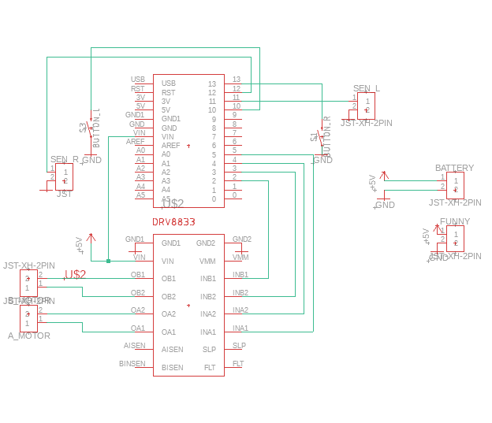
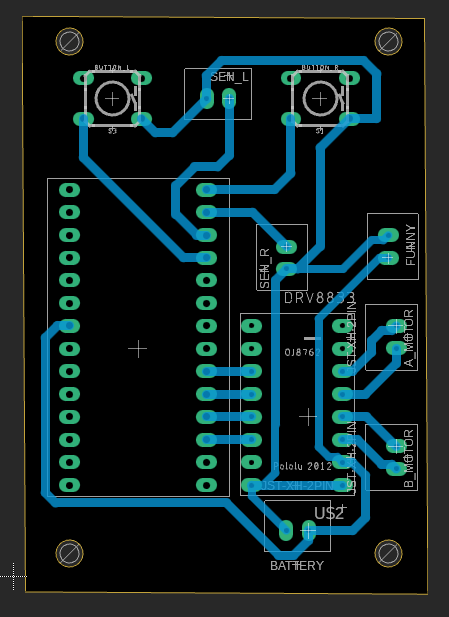
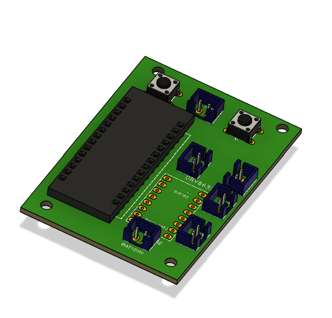

soph week 3/17 - 3/21
i’ve finished all the electrical work for the sumobot. now, i just need to mill the pcb and get a body for it.
schematic of the board
above is the schematic of my board. i ran into a few issues while creating it, mostly because the components defaulted to smd instead of through-hole. other than that, designing the pcb was relatively straightforward.
another challenge was finding the footprint for the md17a or the drv8833 motor driver we’re using. i spent a lot of time searching for the correct footprint since i didn’t want to create one from scratch.
pcb
the component placement isn’t ideal, which forced me to rewire parts of the schematic and pcb to make the traces work. because of this, i also had to adjust some pins in my code to account for the changes. i’ll mill the pcb once i have a body to test it with.
rough image of what my final pcb will look like
code edits
else if (digitalRead(SEN_R) == HIGH) {
right();
Serial.println("turn right");
delay(200);
} else if (digitalRead(SEN_L) == HIGH) {
left();
Serial.println("turn left");
delay(200);
}
besides fixing the pin assignments in my code, i also resolved an issue from last week. previously, the individual sensors wouldn’t work on their own and only functioned when both were activated. my friend miles pointed out that i only needed to read the state of one sensor instead of both.
this fix allowed each sensor to work independently, and now all the fail-safes function correctly—whether one or both sensors are triggered.
void backwards() {
digitalWrite(MOTOR_A1, LOW); digitalWrite(MOTOR_B1, LOW); digitalWrite(MOTOR_A2, HIGH); digitalWrite(MOTOR_B2, HIGH);
}
last week, i mentioned needing to implement a backward function for the sumobot. i realized that with the current star pattern implementation, the robot would move forward instead of backward. i quickly added a backward function and replaced the forward call with it.
next steps: my friend jonas is working on the body and tires, which i’ll use to test my code and sensors. this will help me identify any errors or adjustments needed before the final assembly.